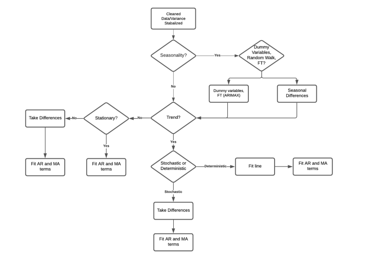

ARMA stands for AutoRegressive Moving Averages. AR and MA terms are used to model the dependency structure in the data.
ARMA models are based on statistical methods (will assume a distribution). The best model will be found by an iterative process.
1.1 Signal
Models can have singal due to a seasonal pattern or due to trend. They can also have signal due to “correlation structure” which can be in the form of Autoregressive and moving averages.
In order to model the dependency in the data, we need to take care of the functional form and any random walks first.

ARIMA Modeling Flowchart
2 No Season and No Trend (Starting Simple)
2.1 Stationarity
To model AR and MA terms, we need to have stationarity first.
Weak stationarity is where there is no predictable pattern, we have constant variance and converges to a constant mean in the “long run.”
2.2 Random Walk
\[
Y_t = Y_{t-1} + \epsilon_t
\]
The current observation only depends on the previous observation and some error. There is no correlation/dependency throughout the entire series.
If we have a random walk, we try to take differences:
\[
Y_t - Y_{t-1} = \epsilon_t
\]
How do we know if we have a random walk or not?
3 Unit Root Testing
3.1 Augmented Dickey-Fuller Unit Root Test
Provides a statistical test for detecting a random walk.
\(H_0:\) Differencing is required (non-stationary data; random walk)
\(H_a:\) Stationary mean about zero (if the series is centered about 0); Stationary mean otherwise
Called “unit root test” because it looks to see if the equation with differenced series has a unit root (\(\phi = 1\))
\[
Y_t = \phi Y_{t-1} + \epsilon_t
\]
Unit roots can exist in models with more than one lag of Y.
Lag 0 tests are equivalent to what we have prev. seen
Lag 1 tests consider models with differenced series of Y and first lag of differenced series
Lag 2 tests consider models with differenced series of Y and first and second lag of differenced series
When testing for stationarity, you should go to at least a lag 2 while looking at ALL of the tests.